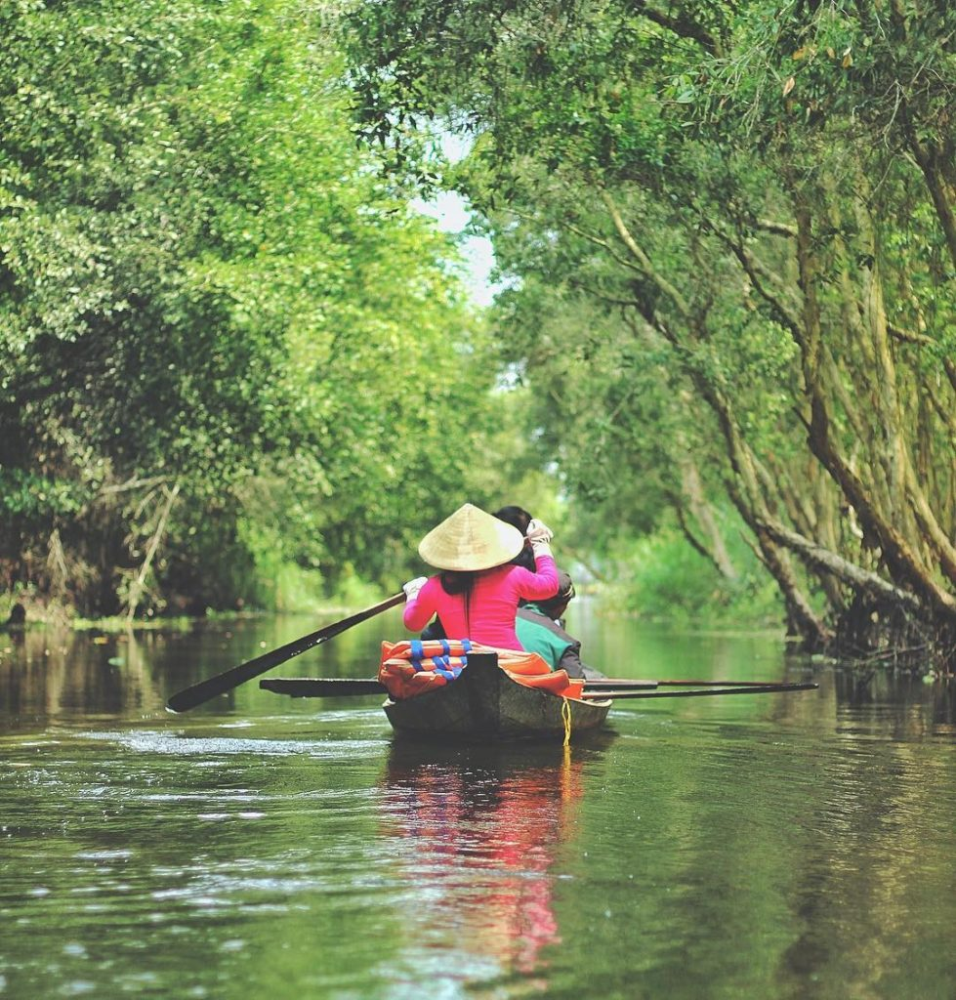
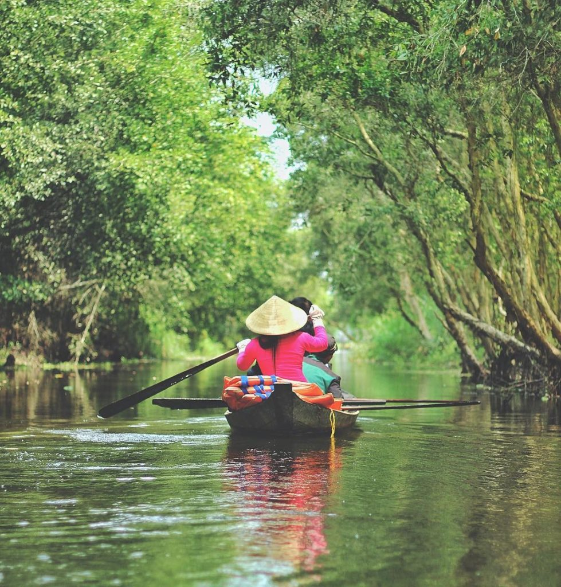

ベトナムのドンタップ県


ドンタップ県はビバの故郷です。
・ドンタップ県について言ったら、すぐに蓮の花を思い出します。ドンタップ県では蓮の花が多い所です。
ビバの故郷！！！
・ドンタップ県について言ったら、すぐに蓮の花を思い出します。ドンタップ県では蓮の花が多い所です。

毎年9月と10月洪水が来ています。農業ができなくなって、その時には、農業のかわりに漁業します。

蜜柑!!!

マンゴー

りょうがん


ドリアン


大きな蓮！！！
ドンタップ県では
PhuocKienお寺にあります。

ドンタップ県では果物だけではなくて、自然には、色々な動物もいます。
こちらには、コウノトリと鶴の森です。


 

今、見ている写真は、ドンタップ県の有名な旅行のところです。シエォキットと言います。